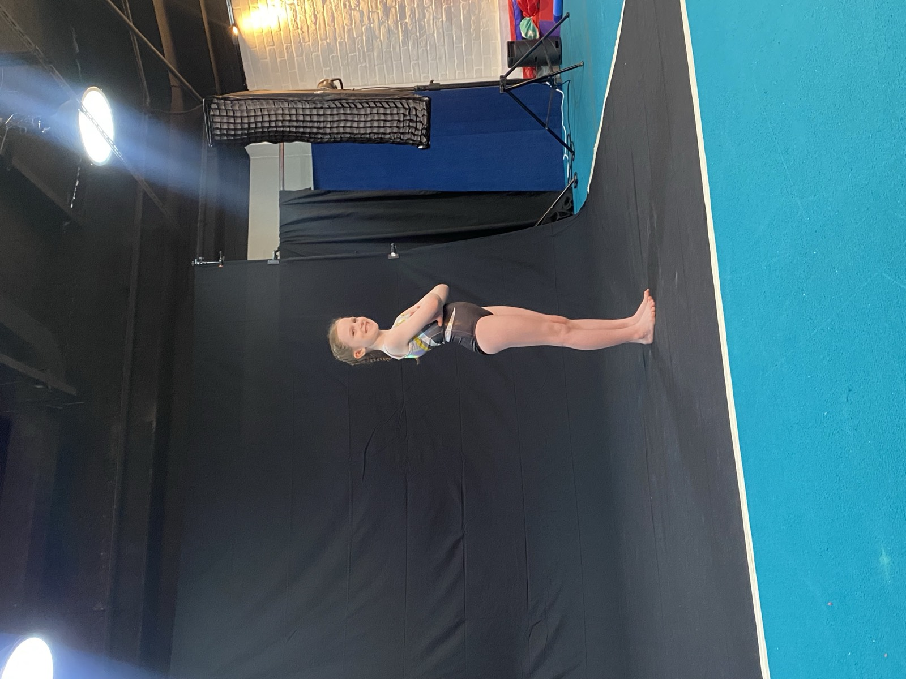

Beginner
The entry level, built for complete beginners and older starters. Ten skills lay the foundation for every tumble to come: rebound jumps, handstand pops, cartwheels, jump turns, bridge, front somersault, snap-ups, flighted roll, landings and the round-off.
What parents notice
A teenager who has found a sport that clicks, with visible strength and control inside a term, and a round-off that opens the door to everything at the next level.

- Runs at
- Jurong Bookable
- Bukit Timah, Dempsey and Dover Not offered